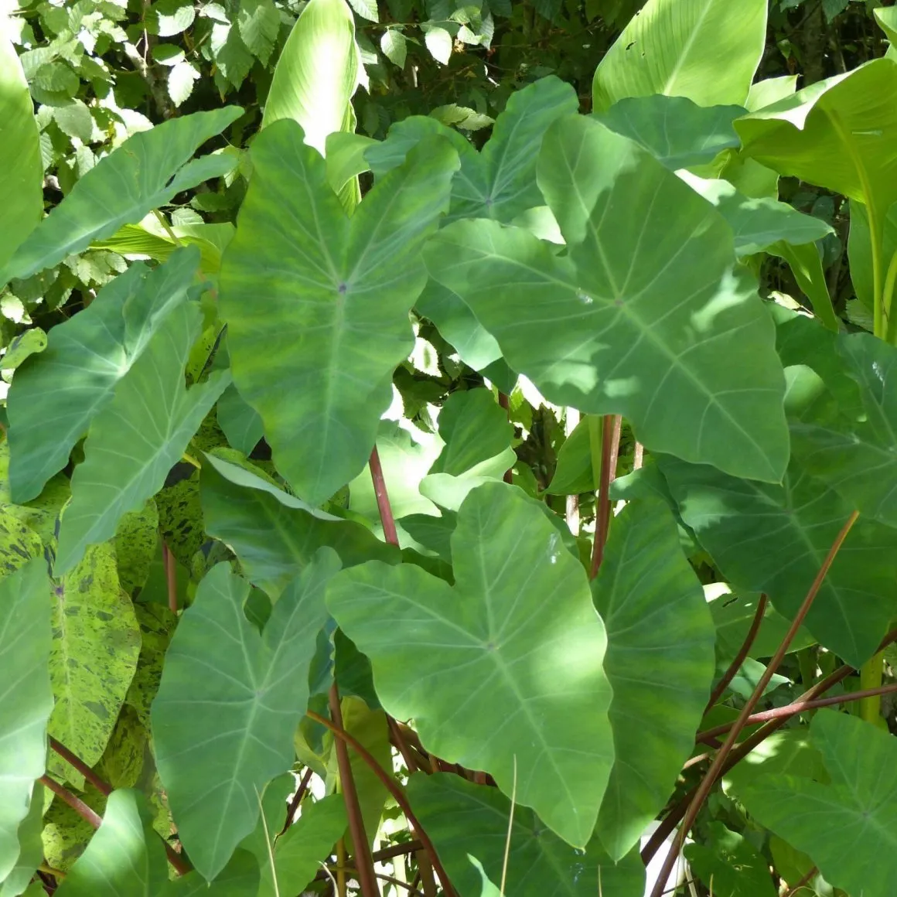
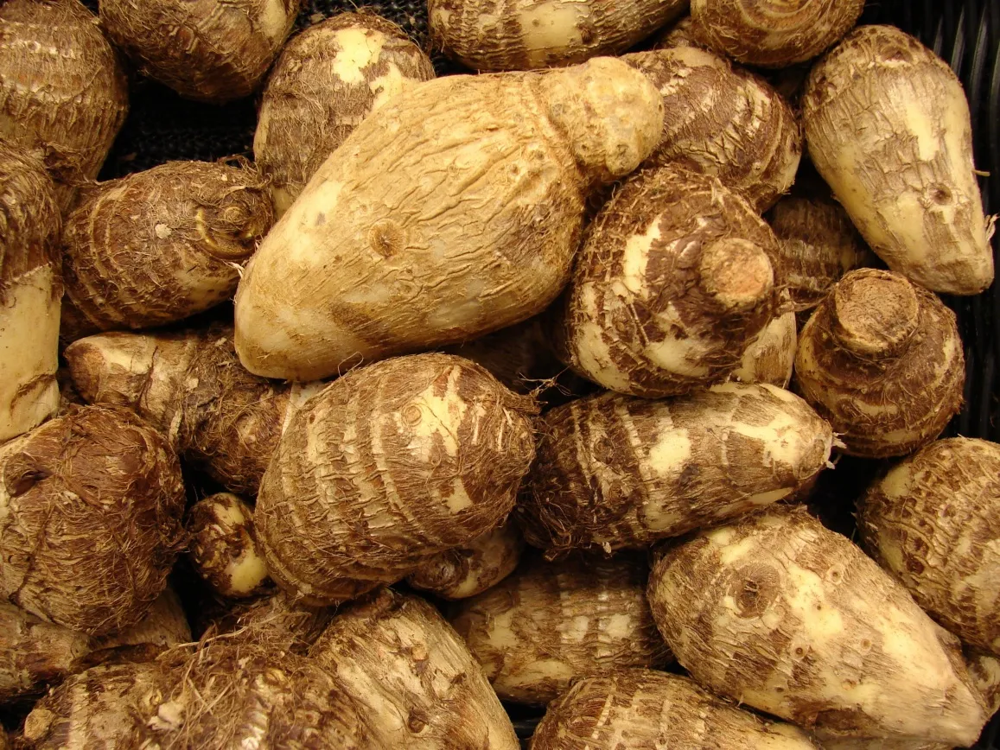
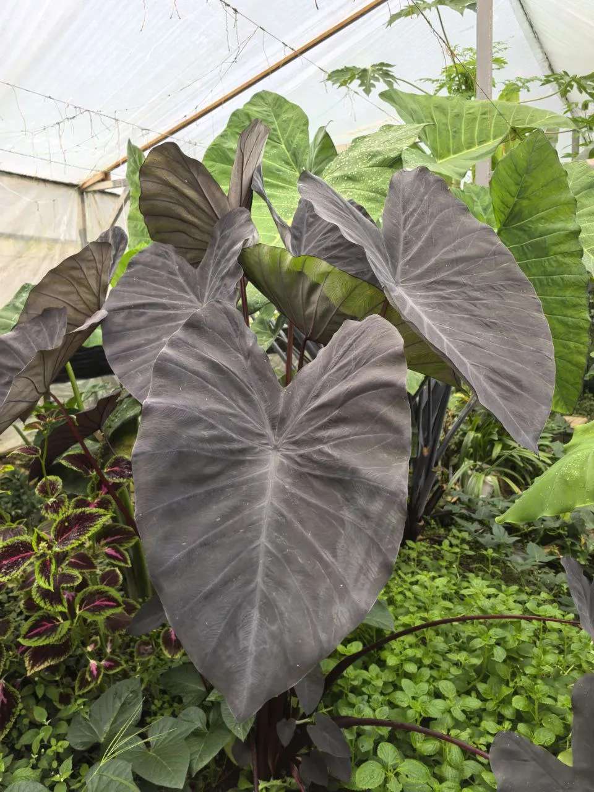
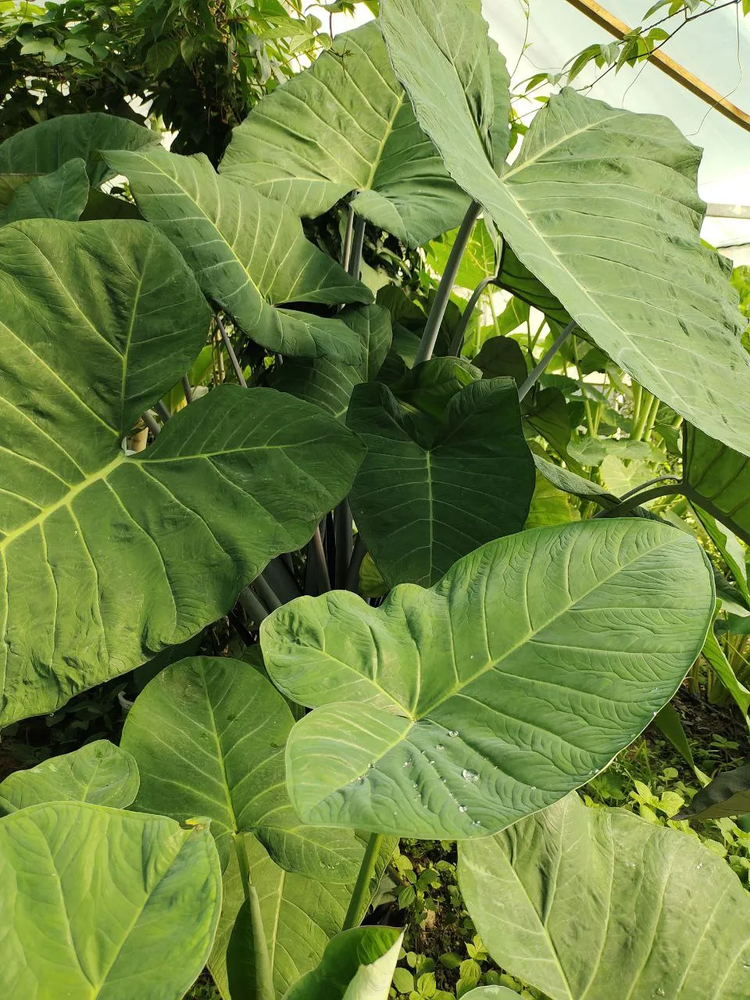
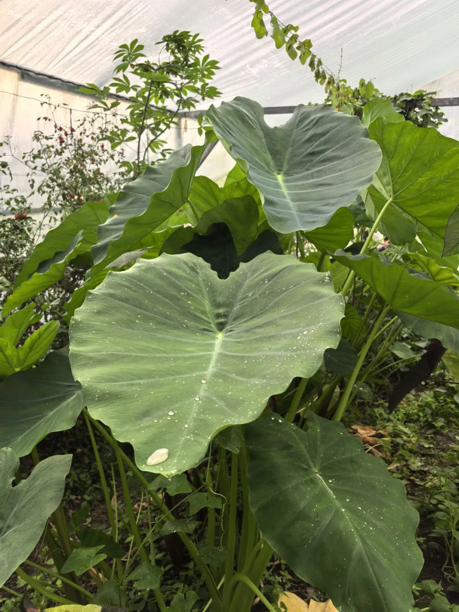
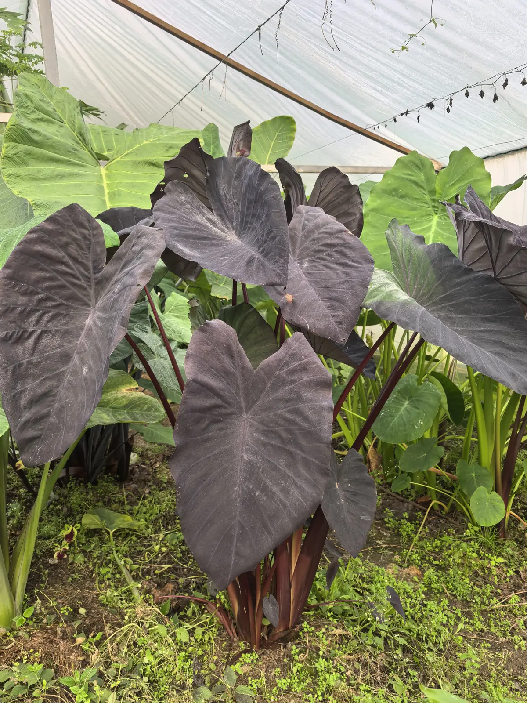
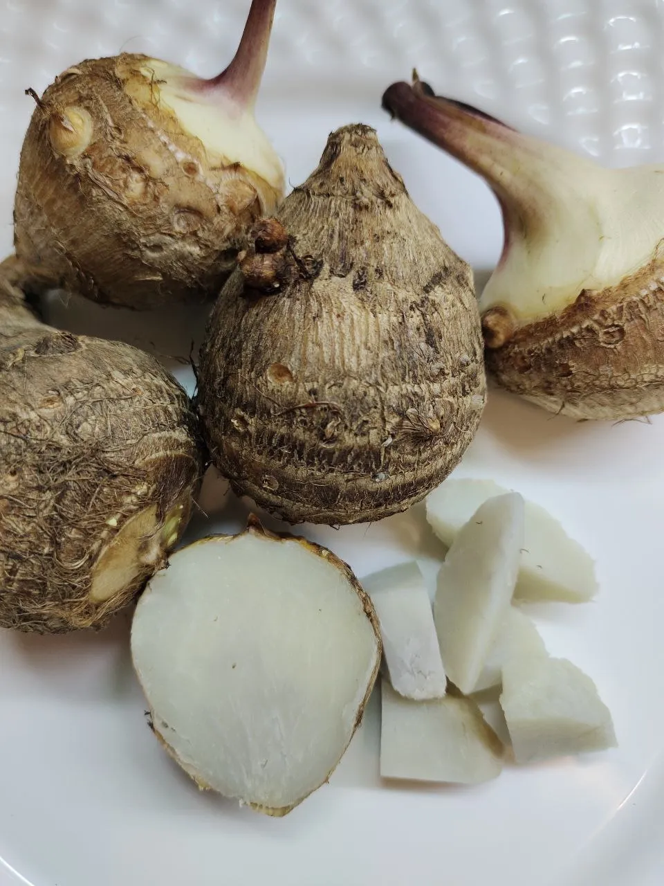
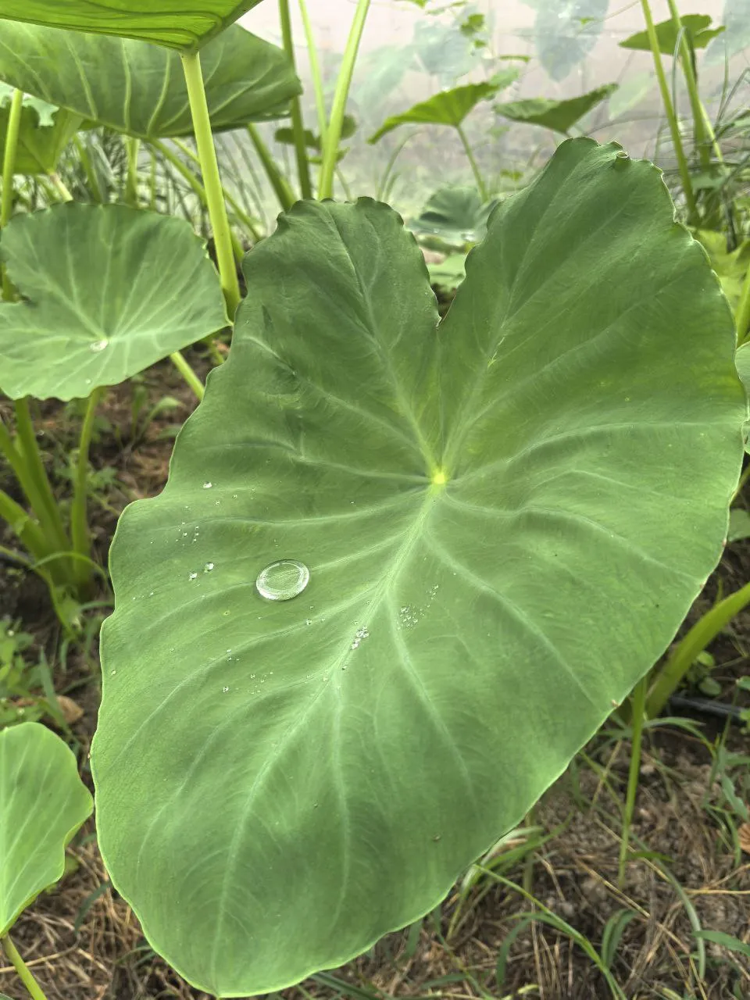

Таро — древнее пищевое растение с огромными листьями и съедобными клубнями. Тропическое болотное растение для водоёмов и озеленения.
Преимущества культуры для вашего участка.
Колоказия в разные сезоны: от всходов до сбора урожая.








Всё, что нужно знать о культуре: от посадки до хранения.
Колоказия, или таро — тропическое болотное растение с огромными листьями в форме сердца. Выращивается как пищевая культура более 2000 лет.
Клубни таро в сыром виде несъедобны из-за содержания оксалата кальция, употребляются только после термической обработки.
Выращивайте в слабокислой почве в полутени. Как болотное растение, колоказия любит много воды, но также нужен дренаж.
Сажайте весной после прогрева почвы до 18°C. В тёплых зонах корень можно оставить в земле как многолетник.
Нет, клубни таро в сыром виде несъедобны. Их необходимо отваривать или запекать.
Она прекрасно растёт у водоёмов и на влажных участках, а также в больших контейнерах.
В холодном климате клубни выкапывают и хранят в помещении для посадки в следующем сезоне.
Другие культуры из коллекции Batatchudo.
Посадочный материал из коллекции Batatchudo и рекомендации по выращиванию.